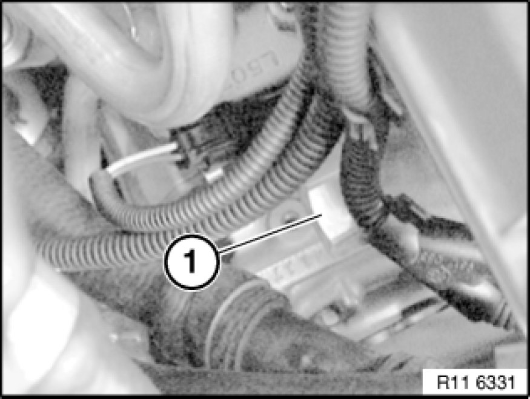
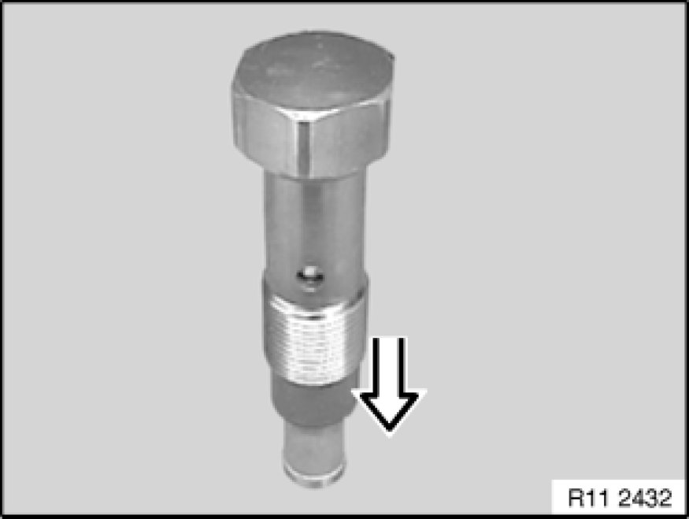

Timing Chain Tensioner: Service and Repair
11 31 090 - Installing and removing/replacing chain tensioner piston (N52K)

Release chain tensioner (1).
Tightening torque 11 31 6AZ Specifications.
Important!
Have a cleaning cloth ready. A small quantity of engine oil will emerge after the screw connection has been released.
Make sure no engine oil runs onto belt drive.
Installation Note:
No sealing ring is fitted during series-production assembly.
A sealing ring must be fitted by service personnel when the chain tensioner is fitted.

If the chain tensioner is reused, its oil chamber must be drained. Place chain tensioner on a level working surface and slowly compress.
Repeat procedure twice.

Assemble engine.